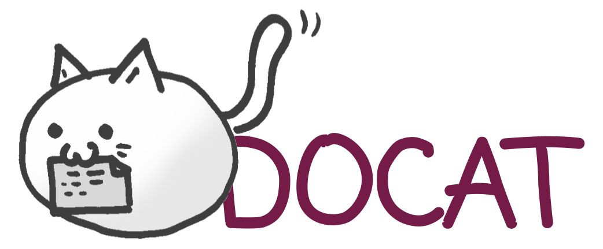

IntroVideo
Pedia
News
Education
Quiz
Community
Team
Quiz (퀴즈)
반려견
과
반려묘
관련 상식 퀴즈와 결과 안내 그리고
설문조사
건강
퀴즈
정답
생활
퀴즈
정답
종
퀴즈
정답
유머
퀴즈
정답
반려묘 퀴즈
고양이의 눈은 어둠속에서도 빛이 나는 이유는?
고양이의 망막뒤에는 빛을 반사하는 반사층
이 있어서 어두운 곳에서는 이 반사층이 빛을 모아 플래시처럼 되쏘기 때문에 사람보다 어두운 곳에서 뛰어난 시력을 보인다. 이럴 때 고양이의 눈은 대부분 초록색으로 빛난다.
고양이의 혀가 까칠한 이유는?
고양이의 혀
에는 가시 같은 돌기가 잔뜩 돋아 있는데 이것은 털을 청소하거나 뼈에 붙은 뼈를 발라내긷 하고 물을 마실 때 돌기 사이사이에 물이 맺히게 하여 담아올리는 데도 쓰인다.
흰색, 갈색, 검은 색의 세 가지 색의 털을 가진 삼색이는?
삼색이의 유전자
는 항상 X염색체에만 존재하므로 이런 옷을 입은 고양이는 모두
암코양
이다. 그렇기 때문에 이런 옷을 입은 수고양이가 있다면 로또보다 더한 행운이라는 뜻에서 삼색이가 행운을 불러온다는 속설이 있다.
다음 중 고양이가 기분좋을때는?
기분이 좋으면
입을 크게 벌리고 하악한다.
불만
은 꼬리를 바닥에 탁탁친다.
화나면
동공이 커졌다 작아졌다한다.
깜짝 놀라면
꼬리를 부풀린다.